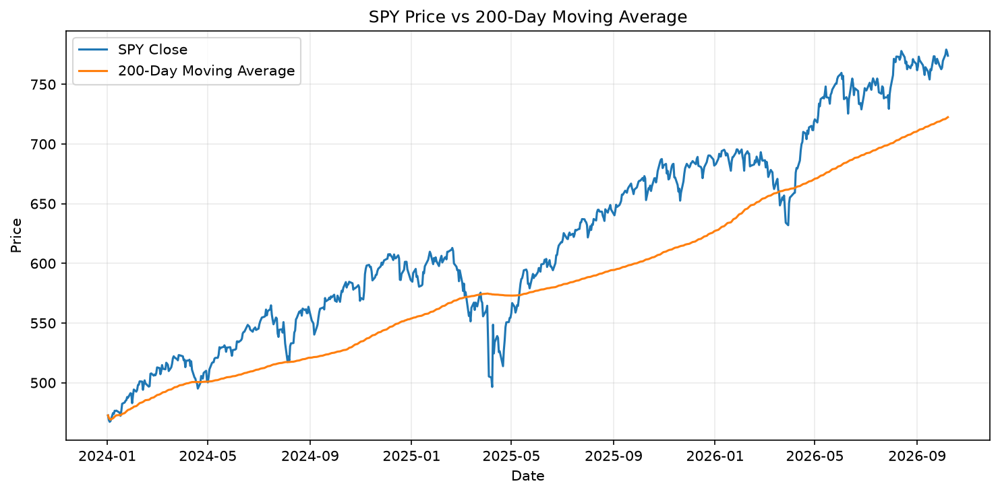
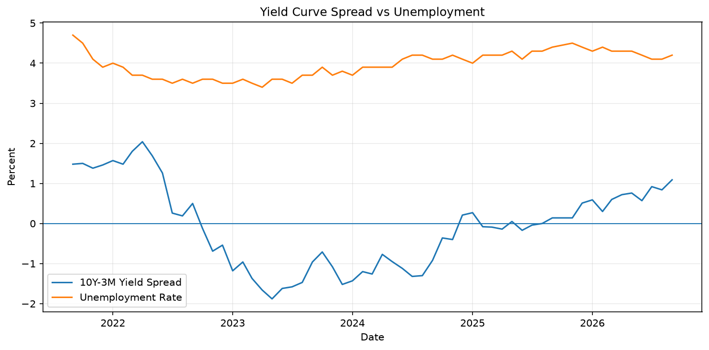

Home
Market Risk
Economic History
Forecasts vs Facts
Market Risk Monitor
Market and macro risk snapshot
Market Snapshot
Metric
Value
SPY Close
773.93
200-Day Moving Average
722.46
30-Day Volatility
9.94%
Drawdown
-0.66%
10Y-3M Yield Spread
0.99%
Unemployment Rate
4.20%
Market Trend

Macro Risk Signals

Data Dates
Market data: 2026-10-08
Yield data: 2026-10-08
Unemployment data: 2026-09-01
Generated by Analytics Platform